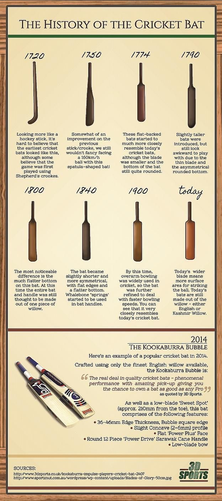

Two teams of eleven individuals each compete in the activity of cricket. Especially in nations like India, Pakistan, Australia, England, and South Africa, it is one of the most well-liked games in the globe.
The game is performed on a grassy area that is either circular or oval in shape. Using a stick to strike a ball and racing between two sets of wickets, one side must make more runs than the other in order to win.
One Day International (ODI) cricket, which is played over 50 overs, T20 cricket, which is played over 20 overs, are three of the game's many distinct forms. Test cricket is played over five days. Each format has its own set of guidelines, and the participants must use a variety of abilities and tactics to succeed.
Cricket is a highly strategy game that calls for talent, concentration, and cooperation. It is renowned for its distinctive lingo and customs, which include the use of judges to render judgments, the donning of white attire, and the custom of taking tea breaks during Test matches.
A firm, leather-covered orb used in the game of cricket is called a cricket ball. It usually measures 22.4 to 22.9 centimeters in circumference and weights between 155.9 and 163 grams. The ball has a cork center that is securely bound with thread before being covered in a leather casing. Depending on the game's structure, the orb is typically either crimson or white.
The bowler bowls the ball in cricket towards the batsman, who tries to strike it with a wooden stick. The ball is a crucial component of cricket and is meticulously made to guarantee an equitable competition between the bowler and the batsman.
A cricket bat is a specialty hardwood club that is used to strike the bowler's ball in the game of cricket.
It has a flat front area known as the blade and is constructed of lightweight, durable willow wood.
The blade typically measures 96 centimeters in length, 10.8 cm in width, and up to 6.8 cm in thickness.
The bat's handle is typically made of cane, rubber, or a mix of the two and is intended to give the batsman a secure hold.
Depending on the player's age, height, and tastes, there are various shapes and weights of cricket bats.
Younger players may use smaller bats, while professional cricketers frequently use bats ranging between 1.1 and 1.4 kg.
Cricket bats are a crucial component of the game, and over time, their form and manufacture have changed to ensure that the batter and bowler have a level playing field.

A cricket pitch is the rectangular playing space in the middle of a cricket ground. It has a flat grass floor and is 22 yards (20.12 meters) long by 10 feet (3.05 meters) broad. The pitch's limits are delineated by painted lines, and a center line known as the "crease" separates it into two halves.
Because it is where the batter and pitcher begin their innings, the crease is significant in cricket. The pitcher throws the ball from one end of the crease while the batter stands at the other. If the ball is thrown outside the permitted limits of the field, the crease aids the judges in determining whether it is "wide" or "no-ball."
Depending on variables like the temperature, type of soil, and regularity of use, the pitch's state can change. Before a game, it is crucial to prepare the field correctly to make sure that it offers a level playing area for both teams. Cricket contests that are more thrilling and difficult can result from a well-prepared pitch.
The collection of three stumps (vertical poles) and two bails (horizontal pieces) that are positioned at either end of the rectangle field is referred to as the wicket in the game of cricket. The aim of the bowlers team is to throw the wicket, and the aim of the batting team is to score runs while defending the wicket.
The batter is deemed "out" if the pitcher strikes the wicket with the ball and removes one or both bails.
A batsman can be dismissed in a number of different ways, such as being bowled (when the ball strikes the wicket directly), being caught (when a fielder catches the ball before it hits the ground), being stumped (when the batsman leaves their crease to play a ball and the wicket-keeper removes the bails before the batsman can return to their crease), and more.
As both teams fight to either defend or remove the stumps and bails, the wicket is a crucial component of the game and can frequently be the cause of extreme excitement and anxiety.
Former Indian cricketer Mahendra Singh Dhoni, also referred to as MS Dhoni, was a wicket-keeper batter. He is regarded as one of the best cricket leaders of all time and is admired for maintaining composure while playing.
Dhoni was born in Ranchi, India, on July 7, 1981. In December 2004, he made his cricket debut for the Indian team, and he soon gained notoriety as a gifted wicketkeeper and middle-order batsman.
When he was chosen to lead the Indian cricket team in 2007, Dhoni accomplished his best feats as a player. India won the 2011 ICC Cricket World Cup, the ICC Champions Trophy, the 2010 and 2016 Asia Cups, and the 2007 ICC World Twenty20 under his direction. The only skipper in history to have captured each of the three main ICC trophies is him. (World Cup, T20 World Cup, and Champions Trophy).
In the closing phases of a game, Dhoni is renowned for his unconventional batting approach and his capacity to win games. He is one of the few players to have over 4,000 runs in Twenty20 (T20) cricket and has over 10,000 runs in One Day International (ODI) cricket.
Dhoni is renowned for his achievement on the field as well as his modesty and sportsmanship off it. In August 2020, he announced his retirement from international cricket, capping a long and fruitful 16-year career.
Former Sri Lankan cricketer Muttiah Muralitharan is considered as one of the best spin bowlers in the sport's history. On April 17, 1972, he was born in Kandy, Sri Lanka.
In August 1992, Muralitharan made his debut for the Sri Lankan cricket squad. He went on to have an 18-year career that was incredibly effective. With 800 and 534 catches respectively, he leads the field in both Test and One Day International (ODI) cricket.
Muralitharan was renowned for his exceptional bowling motion and capacity for producing precise ball rotation on any surface.He was especially successful on turning courses, where he could take advantage of the circumstances to confuse even the greatest batsmen. He was skilled at using both the new and the old ball when bowling, and his variations in flight, speed, and spin made him a challenging bowler to confront.
Muralitharan's success was not without controversy, as the legality of his actions was questioned on a number of times. The International Cricket Council (ICC) approved him, though, and he continued to compete at the top level until 2011, when he announced his retirement from international cricket.
In addition to his accomplishments on the court, Muralitharan is renowned for his charitable efforts off it. In addition to being a UN Goodwill Ambassador for the World Food Programme, he has founded several charity groups to aid impoverished children in Sri Lanka. Muralitharan has gained a great deal of regard and admiration for his services to the game of cricket throughout the globe.
One of the best T20 batsmen in the sport's annals is generally regarded as being Chris Gayle, a Jamaican cricketer. On September 21, 1979, he was born in Kingston, Jamaica.
In 1999, Gayle made his cricket debut for the West Indies squad and soon made a name for himself as a hard-hitting opening batter. He is renowned for his strong stroke play and his uncanny knack for hitting sixes, garnering the moniker "Universe Boss."
Gayle has represented a number of T20 teams around the globe, such as the Jamaica Tallawahs in the Caribbean Premier League (CPL), the Royal Challengers Bangalore in the Indian Premier League (IPL), and the Lahore Qalandars in the Pakistan Super League. (PSL).
In T20 cricket, he owns a number of marks, including the highest individual score (175*), the most hundreds, and the most sixes (1,077).Gayle has also been successful in both Test and One Day International (ODI) cricket. He is one of the few players to have two triple hundreds in Test cricket and has over 10,000 runs earned in ODIs.Gayle is renowned for his flamboyant demeanor, passion of music, and dancing away from the field. Additionally, he has been engaged in a number of charitable projects, such as the founding of the Chris Gayle Foundation, which offers disadvantaged children in Jamaica and other parts of the globe access to sports and educational possibilities.
Former South African cricketer AB de Villiers is considered as one of the best fielders and batters in the sport's history. In Pretoria, South Africa, on February 17, 1984, he was born.
De Villiers played in all forms of the game after making his South Africa debut at the international level in December 2004. He was renowned for his inventive and bold batting style, which allowed him to perform unconventional strokes with ease and score runs all over the field.
He was also a superb fielder, renowned for his daring saves and fast thinking.
De Villiers accomplished many benchmarks and established numerous records over the course of his tenure. He holds the mark for the fastest century in One Day International cricket, which he attained in just 31 balls, and is the person to hit 8,000, 9,000, and 10,000 runs in that category the fastest. In addition, he amassed 22 hundreds in tests and won the ICC ODI Player of the Year award three times.
De Villiers declared his withdrawal from all international cricket in May 2018 and stated that he needed to "step away from the game with dignity." He nevertheless continued to participate in local T20 leagues all over the globe, such as the Big Bash League and the Indian Premier League.